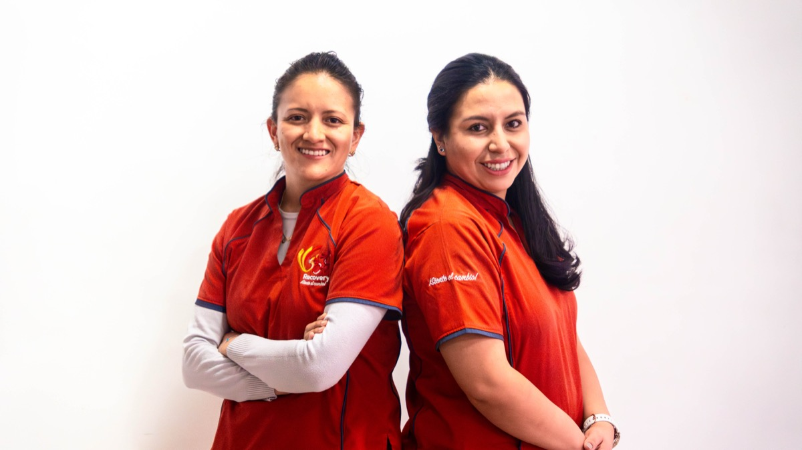
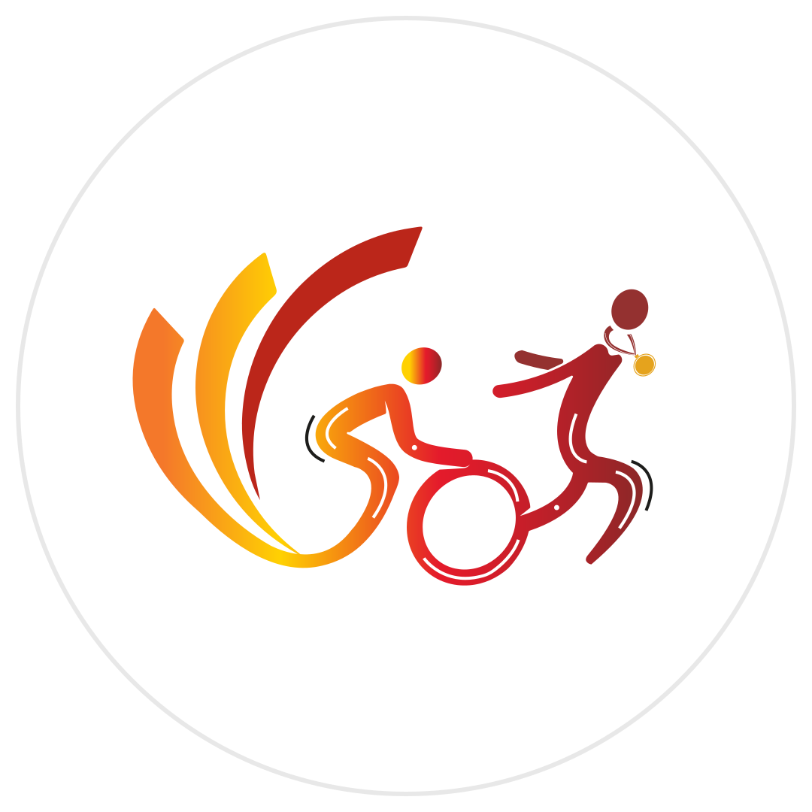
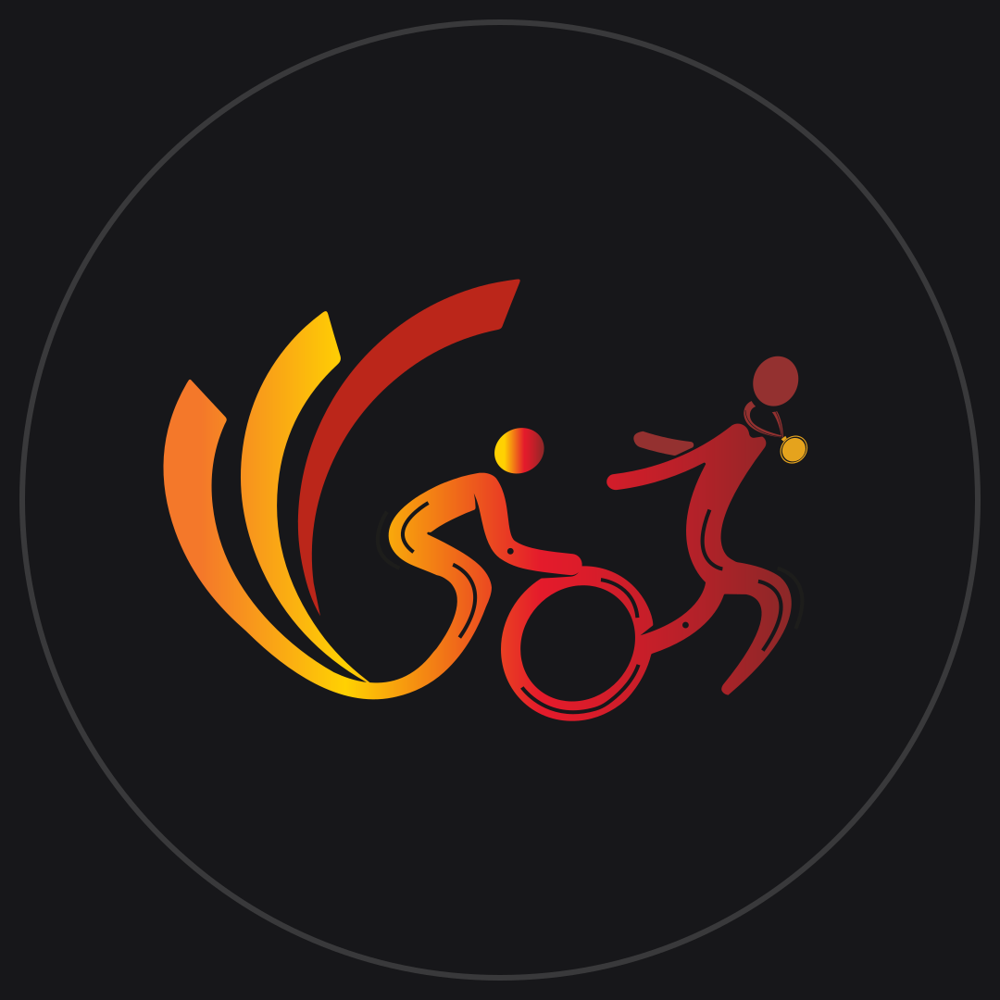
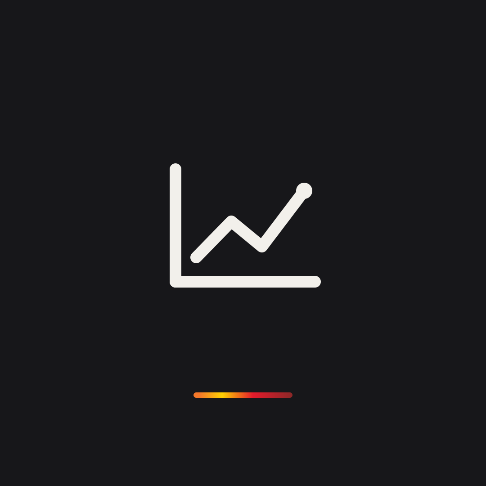
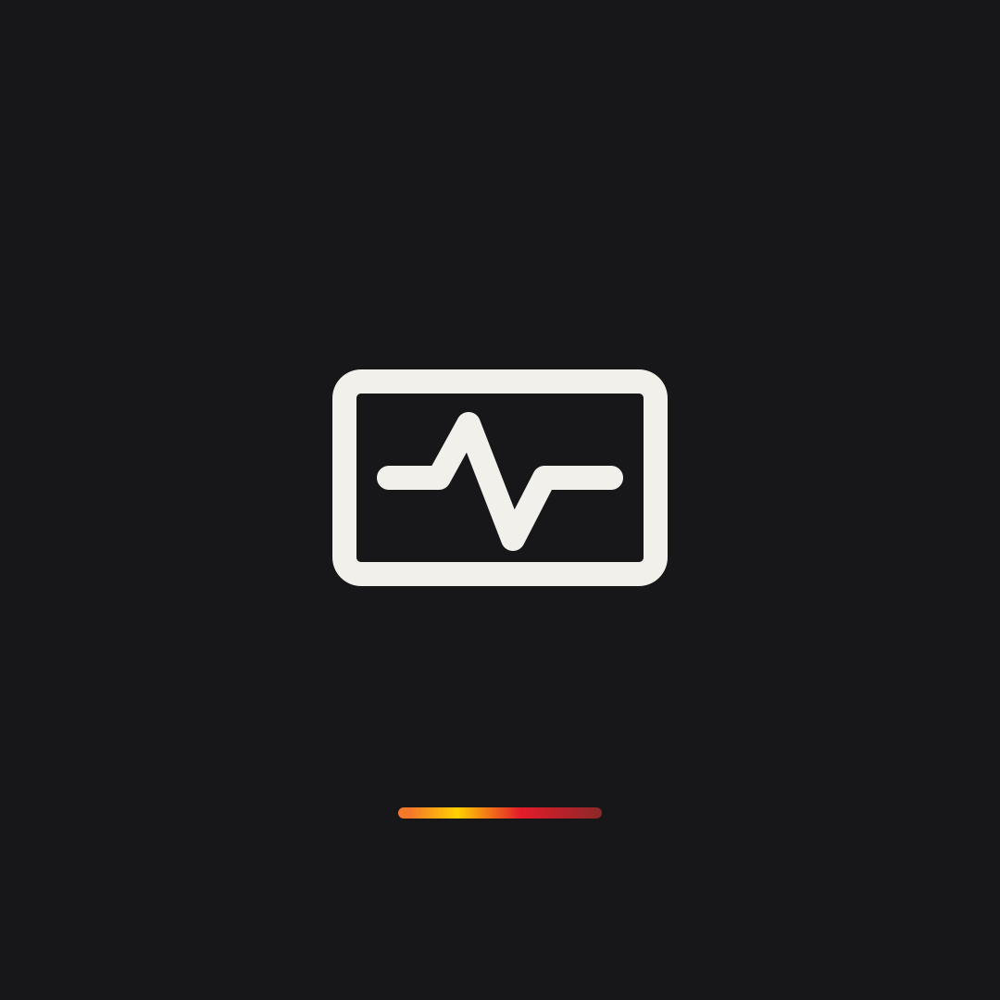
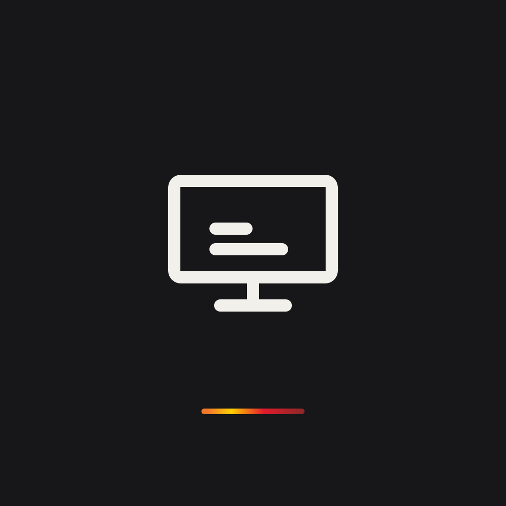

Qué pasó en11 mesesy qué hacemoshasta fin de año
Las 47 piezas publicadas entre el 1 de enero y el 24 de noviembre, con datos reales de Metricool. Y el plan de contenidos, pauta, automatización e identidad para cerrar diciembre.

Las 47 piezas publicadas entre el 1 de enero y el 24 de noviembre, con datos reales de Metricool. Y el plan de contenidos, pauta, automatización e identidad para cerrar diciembre.
Lo esencial
en un minuto
Si no lee nada más, lea esto. Todo lo demás está desplegable más abajo, sección por sección.
2.912 vistas por día. El mes del 10/10 Recovery Sport Fest, el evento de los 10 años. El 1 de febrero solo, la cuenta hizo 37.968 vistas.
Enero y febrero juntos son el 37 % de todo el año y el 38 % del crecimiento.
234 vistas por día y el único mes del año con seguidores en negativo (−4).
Causa directa: 2 piezas en 23 días y ningún carrusel desde el 22 de octubre. Junio fue el otro suelo (510 por día) y también fue un mes sin publicar.
Del alcance de todo el año lo produjo el contenido de evento, con el 51 % de las piezas. Alcance mediano de 1.140 contra 689 del resto.
Probado dos veces: el Sport Fest en febrero y el taller de pretemporada en octubre.
Publicaciones por semana según el plan contratado. Y $0 invertidos en pauta en todo el año.
Con ese ritmo y sin inversión, crecer depende de que vuelva a pasar algo extraordinario.
En 11 meses Recovery publicó 47 piezas y sumó +473 seguidores. Pero 351 de esos 473 llegaron en el primer semestre, empujados por el aniversario y por el título mundial de una atleta de la casa. El segundo semestre, sin un evento de esa escala, sumó 122. La cuenta no tiene un motor propio de crecimiento: tiene picos prestados. Construir ese motor es lo que proponemos para diciembre, y necesita las tres cosas a la vez: más frecuencia, una inversión en pauta y un embudo sin fricción.
Dónde estuvieron los picos, dónde los silencios y qué los causó.
Vistas por día y piezas publicadas
Enero – noviembre 2026 · la barra es el promedio diario del mes
10/10 Recovery Sport Fest. El evento de los 10 años, el 1 de febrero.
Paula Torres, campeona mundial de marcha. Una atleta de la casa.
Julio hizo +106 seguidores sin publicar nada en el feed. Octubre, el taller.
99 días seguidos sin publicar en el feed, del 11 de mayo al 18 de agosto. Mayo cerró en 1.056 vistas diarias y junio cayó a 510, el piso del año. Hubo además otros dos silencios de más de tres semanas en marzo y abril. Hoy llevamos 12 días sin publicar.
Los 5 filtros, en orden. Alcance, retención y valor pasan. Conversión e intención están tapados.
Mediana de 825 personas alcanzadas por pieza sobre 3.691 seguidores. El contenido circula, pero apenas sale de la propia casa: alcanza al 22 % de quienes ya siguen la cuenta.
Mediana de 18,7 % y 8,9 segundos vistos. Razonable para la categoría, con una excepción clara: todo lo que pasa de 60 segundos se desploma.
13,2 guardados y compartidos por cada 1.000 vistas. Es el punto más fuerte de la cuenta: la gente reenvía el contenido de Recovery a alguien que lo necesita.
863 seguidores ganados y 390 perdidos en el año. De los +473 netos, 351 ocurrieron en el primer semestre gracias al Sport Fest. Sin evento, la cuenta no crece sola.
2,3 comentarios por cada 1.000 vistas, y comentar es la única puerta para recibir las guías. El reel que estrenaba la guía del tendón recibió 0.
Los filtros 1, 2 y 3 funcionan: lo que se publica se ve y se comparte. Lo que no ocurre es la conversión. Hay tres razones y las tres son corregibles.
Dicho de otro modo: el contenido no es el problema. El problema es el ritmo, la ausencia de inversión y la fricción del pedido.
Las 6 mejores piezas del año y por qué. Cinco de las seis pertenecen a un evento.
Vistas por pieza · agosto a noviembre
47 piezas del año · mediana de alcance 825
El evento real documentado.
Detrás de escena y prueba / resultado.
Dolor concreto. El único que hace escribir.
Vistas por día, mes a mes
La caída de noviembre es volumen, no alcance
Cuatro problemas concretos, todos corregibles sin producir más contenido.
Retención según duración del reel
10 reels · cada punto es una pieza
Cinco carruseles y fotos por debajo de las 320 personas alcanzadas, y el reel más largo del año. La última tarjeta aparece archivada: el post de la vacante ya no está disponible en Instagram —se dio de baja al llenar el puesto—, aunque sus métricas siguen en Metricool y fue la tercera mejor pieza de octubre.
| Fecha | Pieza | Tipo | Vistas | Alcance | Likes | Coment. | Guard. | Comp. | Reten. |
|---|
Local, adulta y equilibrada entre hombres y mujeres. La mitad no vive en Cuenca.
Edad y género de los seguidores
3.666 seguidores con dato
El hallazgo más caro del informe, y el más fácil de arreglar.
PRETEMPORADA · DEPORTE · RUTINA · EJERCICIO · BIENESTAR · CUELLO · TENDÓN. Siete palabras clave en dieciséis piezas. La audiencia nunca aprende el mecanismo: cada publicación empieza de cero y quien comentó una vez no sabe que puede volver a hacerlo.
El costo concreto: el 11 de noviembre se publicó la guía del tendón —con videos, ritmo y temporizador—. El 12 salió el reel que la entregaba. Ese reel recibió 0 comentarios.
El año fue 100 % orgánico. Con 7 piezas al mes, eso no alcanza para adquirir audiencia ni pacientes.
Metricool no tiene ninguna cuenta de anuncios conectada a Recovery. En once meses no se invirtió un dólar en pauta. Todo el alcance de 2026 —407.719 vistas— es orgánico.
Y el crecimiento lo demuestra: de los +473 seguidores del año, 351 llegaron en el primer semestre empujados por el aniversario y el título mundial de Paula Torres. El segundo semestre, sin un hecho de esa escala, sumó 122 en cinco meses. La cuenta no tiene un motor propio: depende de que pase algo extraordinario.
Un primer mes de prueba, con tres campañas y una sola meta: saber cuánto cuesta un contacto real. Ese número hoy no existe, y sin él no se puede decidir nada.
El presupuesto lo define Recovery. Nosotros proponemos la estructura, las creatividades y la medición; con lo que se invierta en diciembre fijamos el costo por contacto y recién entonces se decide cuánto escalar en enero.
La cuenta usa todavía el logo del evento de los 10 años. Eso fecha el perfil.
El perfil comunica hoy «esto pasó», no «esto es». Propuesta: volver al isotipo oficial, el mismo del sitio web y de los uniformes.

Opción A · recomendadaCoincide con la web y con el fondo de las fotos del equipo
Opción BMás contraste en el feed, menos coherencia con el uniformeHoy ninguna dice qué servicios existen. Ocho destacadas, con las portadas ya hechas.
Las destacadas actuales son todas de eventos: Rehabilitación, 2026, Eventos 2025, Olímpicos, Kms atletar, Fiesta 10/10, Festival 10/10. Ninguna responde qué trata Recovery, con qué tecnología, quién atiende ni cómo agendar. Estas ocho van en este orden exacto: el perfil se lee de izquierda a derecha y las tres primeras son las que más se tocan.
 ServiciosTodo lo que trata, uno por historia
ServiciosTodo lo que trata, uno por historia
CasosAntes y después, testimonios GuíasEl material gratuito y cómo pedirlo
GuíasEl material gratuito y cómo pedirlo EquipoQuién te atiende y en qué es especialista
EquipoQuién te atiende y en qué es especialista El espacioRecorrido por la clínica
El espacioRecorrido por la clínica
TecnologíaEcografía, tecar, ondas, láser, EPI
TalleresLos que hubo y el próximo AgendaHorarios, ubicación, cómo reservar
AgendaHorarios, ubicación, cómo reservarCinco de las ocho se llenan con la producción pendiente: el equipo con el uniforme nuevo recorriendo los espacios y mostrando cada servicio.
4 videos y 3 carruseles al mes. Diciembre replica el arco del taller de octubre.
Semana del 23 al 30 de noviembre · recuperar el ritmo
Tres cosas que sí lo explican: carga sostenida, falta de descanso y movilidad bloqueada. Es el único ángulo que hace comentar a esta audiencia.
Cierra con · GUÍA · y abre el taller del 12 de diciembre
El molde que mejor retuvo del año (26 segundos, 21,5 %, 1.725 vistas). Tema cuello y espalda, que ya probó interés el 4 de noviembre con 7 comentarios y la mejor retención de todo el período.
Cierra con · GUÍA · enlace en bio · sticker en historias
Única fecha comercial de lo que queda del año. Las opciones están abajo. Necesitamos la decisión el martes 24 para alcanzar a producir.
Sin decisión · se reemplaza por contenido de valor y no se pierde el espacio
El ángulo con la mediana más alta del segundo semestre (1.692 vistas). Muestra el proceso, no el precio: qué se mide, qué se pregunta, qué sale de ahí.
Alimenta además la destacada · Servicios
Diciembre · 4 videos + 3 carruseles, anclados en el taller del sábado 12
Cuello y espalda, sábado 12. Copia exacta del molde de septiembre: problema en 3 segundos, qué se lleva la persona, fecha, cupos limitados.
Meta · superar 1.725 vistas
Valor puro, sin precio. Es la pieza que justifica el taller y la que se guarda.
Cierra con · GUÍA · menú de ManyChat
La escasez real funcionó: el carrusel de sold out de septiembre hizo 1.166 vistas sin ser contenido de valor.
Historias el mismo día con el contador de cupos
Gente llegando, pruebas prácticas, caras reales. Se publica el mismo sábado por la tarde, mientras el evento todavía es noticia.
Además · 8 a 10 historias durante el taller con sticker de preguntas
La pieza que más rinde de todo el arco. Su equivalente de septiembre fue la mejor publicación del semestre: 3.260 vistas y los únicos seguidores atribuidos a una pieza.
Meta · superar 3.260 vistas · cierra invitando a la edición de enero
Bono de regalo: valoración más sesiones, en tarjeta física y digital, canjeable hasta marzo. No se descuenta la terapia: se regala.
Dirigido a · quien ya es paciente y quiere regalarlo
Recuento con caras del equipo y pacientes. Cierra abriendo enero —el mes de los propósitos— con la pretemporada del año.
Publicar · entre el 27 y el 30, no el 24 ni el 31
No sé si Recovery quiere participar. Tres caminos, en orden de recomendación:
Lo que no recomiendo: descuento porcentual sobre sesiones sueltas. Abarata el criterio clínico y atrae a quien compra por precio, no por problema.
El arreglo del filtro 5. En vez de una palabra nueva por campaña, una permanente que abre un menú.
Las palabras viejas (TENDÓN, RUTINA, CUELLO, PRETEMPORADA, EJERCICIO, BIENESTAR, DEPORTE) se mantienen activas y caen al mismo menú. Nada de lo publicado se rompe.
Meta para diciembre: pasar de 2,3 comentarios por 1.000 vistas a 50 entradas al menú en el mes. Es la primera cifra real de retorno que va a tener Recovery.
La del tendón, publicada el 11 de noviembre, es el modelo: videos, ritmo de cada ejercicio y temporizador para las series. Se puede abrir aquí mismo.
Cuatro oportunidades que no dependen de publicar más.
La guía del tendón demostró algo: hoy producir una guía web completa —con videos, ritmo y temporizador— cuesta prácticamente lo mismo que producir un PDF, y vale muchísimo más.
Recovery tiene hoy un negocio que cobra por hora de fisioterapeuta en Cuenca, y una audiencia de la que la mitad no vive en Cuenca. Todo esto existe para resolver esa diferencia: convertir atención que hoy no se puede cobrar en producto que sí se puede vender, sin ocupar una camilla más.
Siete decisiones. Las tres primeras bloquean la producción de esta semana.
Bono prepago, valoración a precio especial, o no participar. Sin respuesta el martes va la opción C y no se pierde el espacio.
La propuesta es sábado 12 de diciembre, cuello y espalda. Todo diciembre se construye sobre esa fecha.
Las señales y los ejercicios de las piezas de esta semana y del carrusel C1. Es el mismo pendiente que arrastramos desde septiembre.
Un día de grabación con el uniforme nuevo. Alimenta cinco destacadas, el reel de valoración y buena parte de diciembre.
Reemplazar el logo de los 10 años por el isotipo oficial en Instagram, Facebook, Google Business y WhatsApp Business. Archivos listos en esta carpeta.
Para moverlas a recovery-therapy.com/guias y capitalizar el posicionamiento en Google.
Si hay intención de vender taller virtual o microguías, se graba el taller del 12 con ese formato en mente. Decidirlo después cuesta volver a producir.